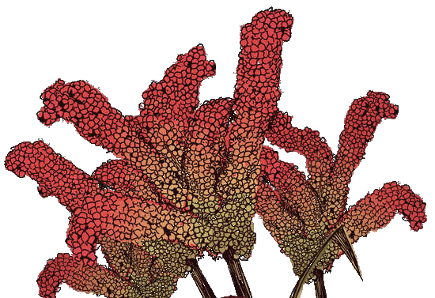

About Ragi & Moon
Ragi & Moon started in my kitchen, at home, as I explored my favorite ingredient, you guessed it - ragi. My husband and Ragi & Moon’s resident advisor, Nirmal, helped me put my food out there.
Every snack at Ragi & Moon is homemade with love, using date-sweeteners and real, unprocessed ingredients. These are recipes that I developed while trying to get my children to eat healthier. I hope you enjoy these dishes as much as I enjoyed creating them.
- Chandrika (moon)
- Based in Pune
- Pan-India shipping
- Instagram @ragiandmoon
